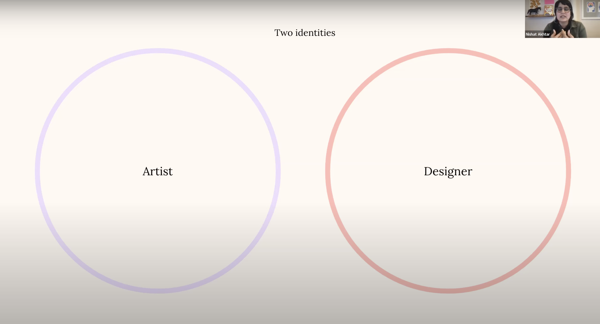

<p>Nishat Akhtar CD Lecture
    <br>
	Nishat Akhtar is a designer that works at Instrument as a VP. Nishat’s practice mainly focuses on creative excellence, practices, partnering with creative leaders, contributing to key client products. Nishat talks about how she had accomplished work for famous brands such as google, nike, and her focus on content creation and illustration practice. Nishat also strongly emphasizes the importance of self expression and storytelling in her work, and talks about the history within design and the work she has accomplished. Nishat also emphasizes the significance of learning from each other, and focuses on drawing the line between a designer and artist. Nishat also talks about her work within an emotional sense, where she states how she saw herself in some brands, and how this had applied to her work. Additionally, Nishat would also see herself in some brands, and talks about how this applies to her work. Nishat also stresses the importance of looking at yourself and understanding yourself in work, and how Nishat herself puts her own voice into her work and the collective practice of design.
</p>

